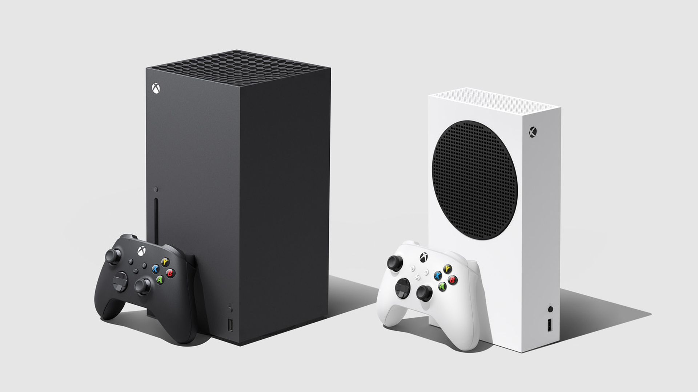

Xbox Series X|S vendió más que PS5 en Reino Unido durante enero
Xbox Series X|S y PlayStation 5 ya llevan un par de meses en el mercado y protagonizando una lucha en la que esperan conquistar a la mayor parte del público. Por esto llamó la atención que, durante enero, Xbox Series X|S vendió más unidades que PlayStation 5 en Reino Unido.
De acuerdo con información de GfK (vía GamesIndustry.biz), durante enero de 2021 se vendieron 150,000 consolas en Reino Unido. Lo interesante es que, por primera vez desde su lanzamiento, el Xbox Series X|S se convirtió en la consola más popular del mes en esta región
Se vendieron cerca de 150,000 consolas en la región en el último mes.
En segundo puesto se encuentra el Nintendo Switch, la consola de Nintendo que sigue siendo una sensación en el mercado. Lo interesante es que las ventas de estas consolas tuvieron un incremento anual de 21%, lo que resulta impresionante teniendo en cuenta que está compitiendo contra las consolas de nueva generación.
Pero, ¿qué hay del PlayStation 5? Ocupó el tercer puesto de ventas, siendo la consola de actual generación que menos unidades despachó durante enero de 2021 en Reino Unido. Ahora bien, hay que tener en cuenta que la fuente reporta que la consola de Sony prácticamente careció de existencias en las primeras 2 semanas del año.
Lo anterior nos recuerda que, como contamos anteriormente, las cifras de ventas de ambas consolas están siendo limitadas por problemas de producción y distribución. Ya que ambas se venden como pan caliente, la realidad es que la que despacha más unidades simplemente es la que logró poner más a la venta.
CUÁLES FUERON LOS JUEGOS MÁS VENDIDOS EN ENERO EN REINO UNIDO?
Ya fuente también compartió la lista de juegos más vendidos durante enero de 2021 en Reino Unido. Ahí una vez más se muestra el dominio de Nintendo en venta de software en la región, aunque otros distribuidores también tuvieron éxito.
Puedes verlo a continuación:
- Animal Crossing: New Horizons
- Mario Kart 8: Deluxe
- Grand Theft Auto V
- Just Dance 2021
- Call of Duty: Black Ops Cold War
- Minecraft Nintendo Switch Edition
- FIFA 21
- Ring Fit Adventure
- Spider-Man: Miles Morales
- Assassin's Creed Valhalla
- Super Mario 3D All-Stars
- HITMAN 3
- New Super Mario Bros U Deluxe
- Super Mario Odyssey
- 51 Worldwide Games
- Immortals Fenyx Rising
- LEGO Harry Potter Collection
- Red Dead Redemption 2
- Pokémon Sword
- The Legend of Zelda: Breath of the Wild
Fuente: levelup